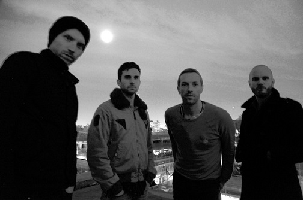

Coldplay
アーティスト一覧に戻る

Coldplayは1996年にイギリスで結成されたロックバンド。
メンバーはChris Martin(1977年3月2日～)、Jonny Buckland(1977年9月11日～)、Guy Berryman(1978年4月12日～)、Will Champion(1978年7月31日～)。
アルバム
Parachutes
A Rush of Blood to the Head
X&Y
Viva La Vida or Death and All His Friends
Mylo Xyloto
Ghost Stories
A Head Full of Dreams
Everyday Life